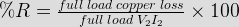
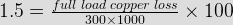
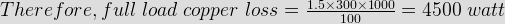
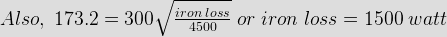
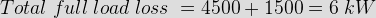
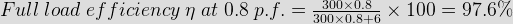
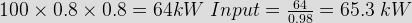
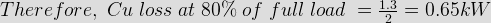
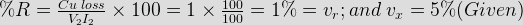
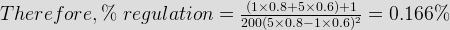

- A 300 kVA, single phase transformer is designed to have resistance of 1.5 % and max. efficiency occurs at load of 173.2 kVA. When supplying the full load at 0.8 p.f. lagging at normal voltage the efficiency will be





 - The maximum efficiency of 100 kVA; single phase transformer is 95 % and occurs at 80 % of full load at 0.8 p.f. If the leakage impedance of the transformer is 5 % the voltage regulation at rated load of 0.8 p.f lagging will be
Since maximum efficiency occurs at 80 % of full load at 0.8 p.f., the output at ηmax is 
∴ Total loss = 65.3 - 64 = 1.3 kW.
This loss is divided equally between Cu and Iron.



 - Emf equation a transformer is equal to
Emf equation of a transformer is E = 4.44 φfT.
Where f = frequency in Hz, φ = flux in weber, T = no. of turns. - Which loss occur in magnetic core of transformer?
Loss that occurs in magnetic core of transformer is iron losses which is sum of the hysteresis loss and eddy current loss. Hysteresis loss and eddy current loss, both depend upon magnetic properties of the materials for construction of transformer core and its design. So these losses in transformer are fixed and do not depend upon the load current.
- In open circuit (O.C) test of transformer which side is kept open?
Open circuit is performed with HV side ( high voltage ) side kept open. The open circuit test or no-load test, is one of the methods used to determine the no-load impedance in the excitation branch of a transformer.
- In short circuit test LV side is
- All day energy efficiency is related to which of the transformer?
Distribution transformer is connected to the line for 24 hrs / day.
All day energy efficiency = ratio of the energy output to that of energy input taken over 24 hours. - There are how many three phase transformer groups?
There are 4 groups- Gr - I (no phase displacement)
Gr - II ( 180° phase displacement )
Gr - III ( - 30° phase displacement )
Gr - IV ( + 30° phase displacement). - When the iron and full load copper loss in transformer are 900 W and 1600 W respectively the maximum efficiency occurs at
Maximum efficiency at = kVA × √( Wi / Wcu )
= kVA × √ ( 900 / 1600 ) = 75 % of full load.
Where Wi = iron loss, Wcu = copper loss. - With 30 % tapping on its auto transformer stater the staring torque of a 3 phase induction motor is 100 N-m if 60 % tapping is utilized the new starting torque would be
Since T ∝ V2, when 60% of tapping is used voltage applied to motor is doubled when compared to 30 % of tapping hence torque becomes 4 times.
- The individual maximum demands on feeder connected to a transformer are 100, 200, 80, 50, 70 kW if the max. Demand experienced by the transformer is 300 kW the diversity factor of the load on it is.
Diversity factor = sum of maximum demand / maximum demand = 100 + 120 + 80 + 50 + 70 / 300 = 1.4.
- The energy supplied to a HT consumer is recorded by an energy meter in conjunction with PT of 11 KV / 110 V and CTs of 50 / 5 A. If the meter records 10000 units the actual energy supplied is
CT ratio = 50 / 5 , PT ratio = 11000 / 110 = 100
Actual energy supplied = meter reading × PT ratio × CT ratio = 1000 × 100 × 10 = 10 million units.
Design with  by SARU TECH
by SARU TECH
www.sarutech.com
Content Credited to electrical4u.com
Online Electrical Engineering Study Site